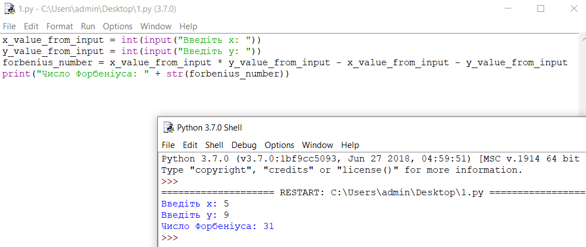

42+1
Одного разу Джеррі втомився тікати, тож вирішив піти до Тома і домовитись про перемир'я. Том дуже цьому зрадів, адже миша сама прийшла до кота і вирішив запропонувати мирний обід, на якому вони забудуть про всі яблука роздору і закопають топор війни а після він зможе розправитись з своїм нічого не підозрюючим ворогом. Джеррі вирішив не ризикувати і попросив Тома на обід піти в Макдональдс і замовити там 43 куриних крильця. Том так ніколи і не повернувся. Джері продовжив бешкетувати, їсти сир і радіти життю, знаючи що його більше не спробують схопити.

А все через те, що найкращий друг Джеррі це Фердінанд Фробеніус і він знає про таємне число Фробеніуса. Число Фробеніуса - це найбільше число, яке не можна представити у вигляді суми двох інших чисел зі спільним дільником 1. Давайте зупинимось на цій фразі трохи детальніше.
Уявімо що ми як і Джеррі знаємо що крильця йдуть в порціях 5 і 9 штук. Їх спільний дільник 1. З цих двох чисел ми не можемо скласти 7,11,13,16 і ще купу чисел. Їх всіх можна легко знайти методом перебору. Математик Джеймс Джозеф Сільвестр задався питання чи таких чисел є безмежна кількість. Формула Фробеніуса дозволяє нам знайти таке число,після якого ми можемо показати у вигляді суми наших чисел будь яке інше число. Ця формула виглядає як (x*y)-x-y, де x i y наші задані числа.
Оскільки ми вже вміємо писати найпростішу програму на пайтоні, давайте напишемо невеличку програму, що буде рахувати нам число Фробеніуса для будь яких заданих х і y.
І перша проблема з якою ми зустрінемось буде введення чисел в нашу програму. Звичайно ми можемо присвоїти значееня нашим змінним і потім з ними працювати,але якщо нам захочеться працювати не з 5 і 9 доведеться переписувати програму, а потім знову і знову і знову. Хотілось б мати функцію, що дозволяє нам отримати значення від людини що запустила нашу програму(користувача). І в пайтоні вона вже існує - це функція input.Вона призупиняє виконання програми і чекає, доки користувач введе деякий текст. Отримавши дані, Python зберігає їх у змінній, щоб вам було зручніше працювати з ними.

Ця функція завжди повертає нас стрічкове значення. Що ж воно таке і як нам отримати з нього
цифру? Що ж, кожна змінна в мові пайтон може належати до деякого типу даних, ось деякі з
них:
- int – цілі числа(-1, 0, 1000003424, 6)
- float – дійсні числа(4.8, 15.16, -23.42)
- str – Unicode-рядки;("Hello world", "Привіт", "8")
- bool - логічний тип даних(true,false)
У мові пайтон використовується динамічна типізація, тому нам не треба писати int example=8. Змінна example автоматично набуде типу int. Якщо ж ми присвоїмо їй після цього значення іншого типу, тип змінної також зміниться автоматично. Для того щоб визначити тип змінної можна скористатись функцією type.Ми також можемо самостійно міняти тип змінної,для цього треба вказати його перед значенням, яке ми присвоюємо змінній. Розглянемо приклад:

Зауваження: Для того щоб вивести комбіновану інформацію(число і стрічку або результат якоїсь функції і число) через print, необхідно явно перетворити тип змінної за допомогою str().
Наша програма для обрахунку числа Фробеніуса буде виглядати десь так:
Що таке алгоритм? Ну і може трохи про скорочення операцій
Ми взнали з вами не тільки число Фробеніуса для чисел 5 і 9 а ще й написали алгоритм для його обрахунку. Алгорит - це послідовне виконання дій програмою. Схематично його можна представити так:

Ми могли б переписати наші обчислення з одного рядка у декілька щоб зменшити їх довжину:
Легко помітити,що ми використали змінну frobenius_number дууже багато раз,при чому більшість з
них йде у віднанні. Для того щоб не писати багато разів такі довгі назви в пайтоні існують
скорочення для операцій:
- += замість змінна = змінна + значення
- -= замість змінна = змінна - значення
- *= замість змінна = змінна * значення
- /= замість змінна = змінна / значення
- //= замість змінна = змінна // значення
- **= замість змінна = змінна ** значення
- %/= замість змінна = змінна %/ значення
Відповідно наш код можна переписати у вигляді:
Ще трошки математики
Головною особливістю формули Фробеніуса є те що числа не можуть мати жодного спільного дільника. Якщо ж він існує,такого числа знайти неможливо. Найлегшим прикладом будуть як раз курячі крильця.
В Сполучених Штатах Америки крильця продають тільки в коробках з 4,6,10,20 штучками(у чисел є
спільний дільник 2). Отже ви ніяк не можете замовити 7,15 чи 132132435 крилець. Яке б велике
непарне число ви не загадали,вам ніколи його не зможуть виготовити і видати.
В Великій Британії ж крильця можна купити тільки в фасовці 6, 9 і 20 штук. Що означає, у разі
замовлення 43 курячих крилець ви будете чекати його вічно, хоча з першого погляду здається що
така комбінація може бути можлива з 6 та 9.Ви можете скласти будь яке число після 43,наприклад
44(20+9+9+6). Саме через це наш обманутий Том буде чекати свого замовлення вічність(
Трошки задачок:
Задача 1
Скільки кроків необхідно щоб перемістити курча з коробки а в коробку б і слоненя з коробки б в коробку а,знаючи що ми не можемо вмістити більше ніж одну тваринку у коробці?(Запрограмуйте програму і обміняйте значення між змінними а та б)Розв'язок
Задача 2
Написати програму, що за заданою стороною квадрата визначає його площу,периметр на діагональ, а також радіус вписаного та описаного кола.Розв'язок
Для того щоб використовувати математичну функцію кореня,потрібно завантажити математичний пакет в нашу програму. Для цього необхідно написати import math на самому початку. Далі необхідно викликати функцію sqrt(з англійської скорочено від square root - квадратний корінь ), передавши їй як параметр значення, з якого ми хочему взяти корінь. (оскільки нам потрібна лише одна функція з математичного пакету,ми можемо написати from math import sqrt і тоді звертатись до функції напряму як sqrt, а не math.sqrt як вказано в прикладі) Зауваження: У прикладі використано функцію eval. Її перевага над функцією int в тому,що ми можемо зчитати також дійсні числа а не тільки цілі
Задача 3
У світі існує дуже багато кольрів. Ми можемо побачити на екрані комп'ютера будь-який колір веселки і навіть більше поглянувши на картинку чи переглядаючи фільм. Для того щоб їх усі відобразити комп'ютер використовує кольорову схему під назвою RGB. Будь який колір на екрані подається як комбінація цих трьох кольорів. Кожен колір вимірюється значенням від 0 до 255(255,0,0 - червоний; 0,0,0 - чорний;255,255,255 - білий, 255,255,0 - жовтий)
У кожного кольора є його протилежність. Це такий колір, який додавши до заданого,в результаті дасть ідеально білий або чорний. Користувач задає 3 параметри(рівень червого,синього і зеленого в кольорі). Вам необхідно знайди параметри для пролиженого кольору використовую задану формулу:
Розв'язок

Задача 4(Ускладнена)
Попросіть користувача ввести 2 числа. Поміняйте місцями значення змінних, у які ви зберегли ці числа не використовуючи жодної додаткової змінноїРозв'язок